대기환경산업기사 (2017-09-23 기출문제)
1과목: 대기오염개론
1. 대기 중 오존(O3)에 관한 설명으로 옳지 않은 것은?
- 인체에 미치는 영향으로 유전인자에 변화를 일으키며, 염색체 이상이나 적혈구 노화를 초래한다.
- 2차 대기오염물질에 해당하고, 온실가스로 작용한다.
- 대기 중 오존의 배경농도는 0.01∼0.02ppb 정도로 알려져 있다.
- 산화력이 강하여 인체의 눈을 자극하고 폐수종 등을 유발시킨다.
(정답률: 89%)

2. 다음 중 대기오염물질의 밀도가 큰 순서부터 차례대로 옳게 나열된 것은? (단, 기타 조건은 동일)
- SO2 ＞ NO2 ＞ CO2 ＞ CH4
- SO2 ＞ NO2 ＞ NH3 ＞ H2S
- SO2 ＞ CS2 ＞HCHO ＞ H2S
- SO2 ＞ HCHO ＞H2S ＞ CS2
(정답률: 87%)
3. London smog 사건의 기온역전층의 종류는?
- 복사성 역전
- 침강성 역전
- 난류성 역전
- 전선성 역전
(정답률: 83%)
4. Deacon법칙을 이용하여 지표높이 10m에서의 풍속이 4m/s일 때, 상공의 풍속이 12m/s인 경우의 높이는? (단, P=0.4)
- 약 156m
- 약 217m
- 약 258m
- 약 324m
(정답률: 66%)
5. 코리올리힘(C, 전향력)의 크기를 옳게 나타낸 것은? (단, Ω：지구자전 각속도, θ ：위도, U：물체의 속도)
- 2ΩcosθU
- 2ΩsinθU
- 2ΩtanθU
- 2ΩcotθU
(정답률: 91%)
6. 다음 중 O3에 대한 반응이 가장 예민하고, 그 피해가 쉽게 나타나는 식물은?
- 목화
- 아카시아
- 시금치
- 사과
(정답률: 79%)
7. 대기오염의 역사적 사건에 관한 설명으로 옳지 않은 것은?
- 뮤즈계곡사건 － 벨기에 뮤즈계곡에서 발생한 사건으로 금속, 유리, 아연, 제철, 황산공장 및 비료공장 등에서 배출되는 SO2, H2SO4 등이 계곡에서 무풍상태의 기온 역전 조건에서 발생했다.
- 포자리카 사건 － 멕시코 공업지역에서 발생한 오염사건으로 H2S가 대량으로 인근 마을로 누출되어 기온역전으로 피해를 일으켰다.
- 보팔시 사건 － 인도에서 일어난 사건으로 비료공장 저장탱크에서 MIC 가스가 유출되어 발생한 사건이다.
- 크라카타우 사건 － 인도네시아에서 발생한 산화티타늄공장에서 발생한 질산미스트 및 황산미스트에 의한 사건으로 이 지역에 주둔하던 미군과 가족들에게 큰 피해를 준 사건이다.
(정답률: 85%)
8. Propane gas 100kg을 액화시켜 만든 연료가 완전기화될 때 그 용적은? (단, 표준상태 기준)
- 25.4Sm3
- 50.9Sm3
- 75.2Sm3
- 102.1Sm3
(정답률: 76%)
9. 다음 그림은 고도에 따른 기온구배를 나타낸 것이다. 이 중 굴뚝에서 배출되는 연기의 확산폭이 가장 큰 기온 구배는?
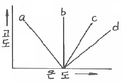
- a
- b
- c
- d
(정답률: 73%)
10. 환기량 산정을 위한 실내공기 오염의 지표가 되는 것은?
- SO2
- NOx
- CO2
- CO
(정답률: 77%)
11. 상대습도가 70%일 때 가시거리 계산식으로 맞는 것은? (단, L：가시거리(km), G：입자상물질의 농도(μg/m3), A：상수)
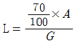
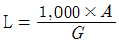
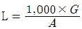
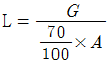
(정답률: 80%)
12. 대기 중 질소산화물이 광화학반응을 하여 광화학 스모그를 형성할 때 일반적으로 어떤 종류의 탄화수소가 가장 유리한가?
- Methane계 HC
- Trans계 HC
- Olefin계 HC
- Saturated계 HC
(정답률: 91%)
13. 다음 중 질소산화물의 광화학반응에서 가장 늦게 생성되는 물질은?
- 오존
- 알데히드
- 아질산
- PAN
(정답률: 63%)
14. 상온 25℃에서 가스의 체적이 400m3이었다. 이 때 기온이 35℃로 상승하였다면 가스의 체적은 얼마로 되는가?
- 408.2m3
- 410.1m3
- 413.4m3
- 424.8m3
(정답률: 63%)
15. 대기오염원의 영향평가 방법 중 분산모델에 관한 설명으로 옳지 않은 것은?
- 점, 선, 면 오염원의 영향을 평가할 수 있다.
- 2차 오염원의 확인이 가능하다.
- 새로운 오염원이 지역 내에 신설될 때 매번 평가하여야 한다.
- 지형 및 오염원의 조업조건에 영향을 받지 않는다.
(정답률: 86%)
16. 할로겐화 탄화수소류(halogenated hydro- carbons)에 관한 설명으로 옳지 않은 것은?
- 할로겐화 탄화수소는 탄화수소 화합물 중 수소원소가 할로겐원소로 치환된 것으로 가연성과 폭발성이 강하고, 비점이 200℃ 이상으로 높아 상온에서는 안정하다.
- 대부분의 할로겐화 탄화수소 화합물은 중추신경계 억제작용과 점막에 대한 중등도의 자극효과를 가진다.
- 사염화탄소는 가열하면 포스겐이나 염소로 분해되며, 신장장애를 유발하며, 간에 대한 독작용이 심하다.
- 할로겐화 탄화수소의 독성은 화합물에 따라 차이는 있으나, 다발성이며 중독성이다.
(정답률: 72%)
17. 실내공기 오염에 관한 설명으로 가장 거리가 먼 것은?
- 일산화질소는 일산화탄소에 비해 헤모글로빈과의 결합력이 수백 배 높기 때문에 산소의 체내 유입을 저해하고 경련과 마비를 일으킬 수 있다.
- 실내공기오염의 지표라는 관점에서 볼 때 세균의 위해성은 그 자체의 병원성보다 오히려 세균의 수가 문제시 되는 경우가 많다.
- 혈중 CO-Hb(%)가 10% 정도까지는 인체에 대한 특이사항은 거의 없다고 볼 수있다.
- 건물이 낡은 경우나 해체공사 시에는 석면먼지가 공기 중에 부유하므로 노동재해의 중요한 요인으로 간주되기도 한다.
(정답률: 80%)
18. 어느 사업장내 굴뚝 TMS에서의 이산화질소 배출량을 계산하려고 한다. 굴뚝에서의 이산화질소 배출농도가 표준상태에서 224ppm이고, 배출 유량이 10,000Sm3/hr일 때 단위시간당 배출량(kg/hr)으로 환산하면? (단, 표준상태)
- 3.2
- 3.8
- 4.6
- 5.2
(정답률: 61%)
19. 대기압력이 870mb인 높이에서의 온도가 17℃이었다. 온위(potential temperature, K)는 얼마인가?
- 약 268
- 약 280
- 약 302
- 약 312
(정답률: 71%)
20. 지구 지표면의 열수지를 표현하기 위해 복사수지식을 적용하는데 다음 중 대기과학에서 사용하는 용어로서 지표의 반사율을 나타내는 지표는? (단, 입사에너지에 대하여 반사되는 에너지의 비)
- 유효율
- 알베도
- 복사도
- 일사도
(정답률: 88%)
2과목: 대기오염 공정시험 기준(방법)
21. 먼지측정을 위해 굴뚝배출가스 중 수분량을 측정하였다. 측정결과가 다음과 같을 때 배출가스 중 수분량은? (단, 16℃의 포화수증기압은 14.1mmHg)
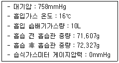
- 약 6%
- 약 9%
- 약 13%
- 약 22%
(정답률: 59%)
22. 굴뚝 배출가스 중 먼지측정을 위해 시료채취를 실시할 경우 등속흡입 정도를 보기 위한 등속흡입계수의 범위로 가장 적합한 것은?(오류 신고가 접수된 문제입니다. 반드시 정답과 해설을 확인하시기 바랍니다.)
- 85∼1⑤%
- 90~110%
- 95~110%
- 95~115%
(정답률: 73%)
23. 암모니아 시료 채취 시 채취관의 재질로 가장 적합한 것은?
- 보통강철
- 네오프렌
- 실리콘수지
- 염화비닐수지
(정답률: 72%)
24. 화학분석 시 온도의 표시에 관한 설명으로 옳지 않은 것은?
- 냉수는 15℃ 이하이다.
- 온수는 60∼70℃, 열수는 약 100℃를 말한다.
- 찬 곳은 따로 규정이 없는 한 4℃ 이하를 뜻한다.
- 냉후(식힌 후)라 표시되어 있을 때는 보온 또는 가열 후 실온까지 냉각된 상태를 뜻한다.
(정답률: 80%)
25. 고용량공기시료채취법으로 외부로 비산배출되는 먼지농도를 측정하고자 한다. 풍속의 범위가 0.5m/sec 미만 또는 10m/sec 이상되는 시간이 전 채취시간의 50% 이상일 때 풍속에 대한 보정계수는?
- 1.0
- 1.2
- 1.4
- 1.5
(정답률: 71%)
26. 액의 농도를 (1→5)로 표시한 것으로 가장 적합한 것은?
- 고체 1mg을 용매 5mL에 녹인 농도
- 액체 1g을 용매 5mL에 녹인 농도
- 액체 1용량에 물 5용량을 혼합한 것
- 고체 1g을 용매에 녹여 전량을 5mL로 하는 비율
(정답률: 80%)
27. 기체크로마토그래피를 이용하여 분석실험을 할 때, 분리관의 이론단수가 1,600이고, 보유시간이 10분인 피이크의 좌우 변곡점에서 접선이 자르는 바탕선의 길이(mm)는? (단, 기록지 속도는 10mm/분이고, 이론단수는 모든 성분에 대하여 같다.)
- 6
- 10
- 18
- 24
(정답률: 70%)
28. 다음 중 약한 암모니아 액성에서 다이메틸글리옥심과 반응시켜 파장 450nm 부근에서 흡광도를 측정하는 화합물은?
- 니켈화합물
- 비소화합물
- 카드뮴화합물
- 염소화합물
(정답률: 71%)
29. 다음 중 환경대기 중의 탄화수소 농도를 측정하기 위한 시험방법과 거리가 먼 것은?
- 용융 탄화수소 측정법
- 활성 탄화수소 측정법
- 비메탄 탄화수소 측정법
- 총탄화수소 측정법
(정답률: 82%)
30. 환경대기 중 유해휘발성 유기화합물(VOCs)의 고체흡착법에 사용되는 용어의 정의에서 ( )안에 알맞은 것은?
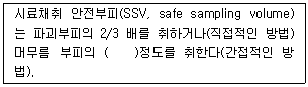
- 1/2
- 2배
- 5배
- 10배
(정답률: 73%)
31. 질산은적정법으로 배출가스 중의 시안화수소를 분석할 때 pH 조절에 관한 설명이다. ( )안에 알맞은 것은?
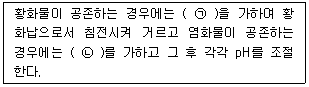
- ㉠ 탄산납, ㉡ 과산화수소수 W/V(3%) 1mL
- ㉠ 탄산납, ㉡ 암모니아수 W/V(28%) 1mL
- ㉠ 수산화납, ㉡ 과산화수소수 W/V(3%) 1mL
- ㉠ 수산화납, ㉡ 암모니아수 W/V(28%) 1mL
(정답률: 54%)
32. 다음 분석대상가스 중 수산화소듐용액을 흡수액으로 사용하지 않는 것은?
- 불소화합물
- 브롬화합물
- 벤젠
- 페놀
(정답률: 57%)
33. 환경대기 중 질소산화물 측정방법에서 수동측정방법인 것은?
- 오르토톨리딘법
- 흡광차분광법(DOAS)
- 화학발광법(Chemiluminescence method)
- 야곱스호흐하이저(Jacobs-Hochheiser)법
(정답률: 84%)
34. 환경대기 중 납을 분석하기 위한 시험방법에서 대기오염물질공정시험기준상 주시험방법은?
- 유도결합 플라즈마 분광법
- 원자흡수분광법
- X선 형광법
- 이온크로마토그래피
(정답률: 78%)
35. 분석시험에 관한 기재 및 용어설명 중 옳은 것은?
- 용액의 액성표시는 따로 규정이 없는 한 유리전극법에 의한 pH 미터로 측정한 것을 뜻한다.
- “정확히 단다”라 함은 규정한 양의 검체를 취하여 분석용 저울로 1mg까지 다는 것을 뜻한다.
- 시험조작 중 “즉시”란 10초 이내에 표시된 조작을 하는 것을 뜻한다.
- “감압 또는 진공”이라 함은 따로 규정이 없는 한 1.5mmHg 이하를 뜻한다.
(정답률: 74%)
36. 분석대상가스가 페놀인 경우, 채취관과 연결관의 재질로 가장 거리가 먼 것은?
- 석영
- 경질유리
- 보통강철
- 불소수지
(정답률: 73%)
37. 굴뚝에서 배출되는 매연을 링겔만 매연농도표에 의해 비교 측정하고자 할 때 측정방법으로 옳지 않은 것은?
- 굴뚝 배경은 검은 장해물은 피한다.
- 될 수 있는 한 바람이 불지 않을 때 측정한다.
- 굴뚝 배출구에서 30∼45cm 떨어진 곳의 농도를 관측 비교한다.
- 연기의 흐름에 직각인 위치에 태양광선을 정면으로 받은 방향을 선정한다.
(정답률: 74%)
38. 이온크로마토그래피법(Ion Chromato- graphy)의 장치에 관한 설명 중 ( )안에 알맞은 것은?
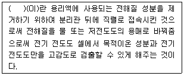
- 분리관
- 용리액조
- 송액펌프
- 써프렛서
(정답률: 86%)
39. 비분산 적외선 분광분석법에서 복광속 비분산분석계 적용시 사용하는 분석계의 광원으로 가장 적절한 것은?
- 적외선 광원인 중수소방전관
- 근적외부의 광원인 텅스텐램프
- 좁은 선폭을 갖고 휘도가 높은 스펙트럼을 방사하는 중공음극램프
- 니크롬선 또는 탄화규소의 저항체에 전류를 흘려 가열한 것
(정답률: 61%)
40. 배출가스 중의 수분량 측정에 사용되는 흡습제로 적당한 것은?
- 탄산칼슘
- 탄산나트륨
- 무수염화칼슘
- 염화마그네슘
(정답률: 67%)
3과목: 대기오염방지기술
41. 원심력 집진장치에 대한 설명으로 가장 거리가 먼 것은?
- 압력손실과 집진율 등을 고려하여 접선유입식 싸이클론의 경우 입구 가스속도는 통상 7∼15m/sec 범위로 한다.
- Cut size(Dpc)란 싸이클론에서 50%의 집진효율로 제거되는 입자의 크기를 말한다.
- 블로우 다운 효과가 있으면 집진율이 좋아진다.
- 싸이클론의 직경이 클수록 집진율은 좋아진다.
(정답률: 75%)
42. 매시간 5ton의 중유를 연소하는 보일러의 배연탈황에 수산화나트륨을 흡수제로 하여 부산물로서 아황산나트륨을 회수한다. 중유의 황분은 2.56%, 탈황을 90%로 하면 필요한 수산화나트륨의 이론적인 양은?
- 288kg/h
- 324kg/h
- 386kg/h
- 460kg/h
(정답률: 51%)
43. 전기집진장치에 관한 설명으로 옳지 않은 것은?
- 성능이 우수하여 0.1μm 이하의 미세입자까지 포집이 가능하다.
- 고온 가스 처리가 가능(약 500℃ 전후)하다.
- 압력손실의 경우 건식을 10mmH2O, 습식은 20mmH2O로 낮은 편이다.
- 조건 변동이 용이하여, 가스처리 용량 변화에도 적응하기 유리하다.
(정답률: 68%)
44. 유해가스 처리방법으로 옳지 않은 것은?
- 시안화수소 － 물에 의한 세정
- 아크로레인 － 물에 의한 세정
- 벤젠 － 촉매연소
- 비소 － 알칼리액에 의한 세정
(정답률: 67%)
45. 황분이 중량비로 S%인 벙커유의 사용량이 분당 Wkg이라고 하면 황산화물(SO2) 배출량(Sm3/hr)은? (단, 벙커유의 비중은 0.9)
- 22.4 × S × W
- 0.42 / (S × W)
- 22.4 / (S × W)
- 0.42 × S × W
(정답률: 55%)
46. 화학적 흡착과 비교한 물리적 흡착의 특성에 관한 설명으로 옳지 않은 것은?
- 흡착제의 재생이나 오염가스의 회수에 용이하다.
- 온도가 낮을수록 흡착량이 많다.
- 표면에 단분자막을 형성하며, 발열량이 크다.
- 압력을 감소시키면 흡착물이 흡착제로부터 분리되는 가역적 흡착이다.
(정답률: 69%)
47. 유량 210,000m3/day의 공기를 흡수탑을 거쳐 정화하려고 한다. 흡수탑 접근 유속을 0.8m/sec로 유지하기 위해 소요되는 흡수탑의 직경은?
- 3.21m
- 2.75m
- 2.18m
- 1.97m
(정답률: 53%)
48. 집진장치의 입구와 출구에서 가스의 함진농도가 각각 22.6g/m3, 1.073g/m3일 때, 이 집진장치의 집진율은?
- 95.3%
- 97.5%
- 98.3%
- 99.2%
(정답률: 58%)
49. 가스 흡수법의 효율을 높이기 위한 흡수액의 구비요건으로 옳은 것은?
- 용해도가 낮아야 한다.
- 용매의 화학적 성질과 비슷해야 한다.
- 흡수액의 점성이 비교적 높아야 한다.
- 휘발성이 높아야 한다.
(정답률: 64%)
50. 전기집진장치의 운전요령에 대한 설명으로 옳지 않은 것은?
- 시동 시에는 애자, 애관 등의 표면을 깨끗이 닦아 고압회로의 절연저항이 1,000mΩ 이하가 되도록 한다.
- 운전 중 2차 전류가 현저하게 적을 때는 조습용 스프레이 수량을 증가시켜 전기저항을 떨어뜨려 준다.
- 운전 종료 시 전극의 구부러짐, 먼지의 부착여부 등을 점검 보수한다.
- 접지 저항은 적어도 년 1회 이상 점검하고, 10Ω 이하가 되도록 유지한다.
(정답률: 68%)
51. 악취제거 시 화학적 산화법에 사용하는 산화제로 가장 거리가 먼 것은?
- O3
- Fe2(SO4)3
- KMnO4
- NaOCl
(정답률: 65%)
52. 다음 흡수장치 중 가스분산형 흡수장치에 해당하는 것은?
- 벤츄리 스크러버
- 기포탑
- 젖은 벽탑
- 분무탑
(정답률: 69%)
53. 관경 35cm인 관으로 50m3/min의 배기가스를 처리할 때 관내 속도압은? (단, 가스밀도 1.2kg/m3, 마찰 손실은 무시한다.)
- 10.2mmH2O
- 9.7mmH2O
- 8.4mmH2O
- 4.6mmH2O
(정답률: 34%)
54. 20℃, 1기압에서 충전탑으로 혼합가스 중의 암모니아를 제거하려고 한다. stripping factor가 0.8이고, 평형선의 기울기가 0.8일 경우 흡수액의 양(kg-mol/hr)은? (단, 흡수액은 암모니아를 포함하지 않고, 재순환되지 않으며, 등온상태라 가정, 혼합가스량은 20℃, 1기압에서 40kg-mol/hr이다.)
- 약 28
- 약 40
- 약 57
- 약 89
(정답률: 61%)
55. 다음에서 설명하는 탈취방법으로 가장 적합한 것은?
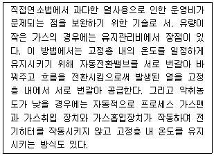
- 축열 연소법
- 촉매 산화 탈취법
- 코로나를 이용한 탈취법
- 기존 시설의 연소실을 이용하는 방법
(정답률: 70%)
56. 연소 조절에서 NOx의 생성을 억제하는 방법으로 가장 적합한 것은?
- 공연비를 높게 한다.
- 화로 내에서 수소와 산소의 합성반응을 증진시켜 발열반응을 유도한다.
- 연소용 공기의 예열 온도를 높인다.
- 배기가스를 재순환하여 연소한다.
(정답률: 74%)
57. 전기집진장치에서 집진면의 간격이 14cm, 공기의 유속이 2.4m/s일 때 층류영역에서 입자를 100% 제거하기 위한 이론적인 집진극의 길이는? (단, 겉보기 이동속도는 6cm/s)
- 1.6m
- 2.8m
- 3.2m
- 5.6m
(정답률: 47%)
58. 액체연료 연소장치에 사용되는 버너의 종류 중 분무각도는 30∼60° 정도, 유량조절범위는 1：5정도로 비교적 큰 편이며, 연료분사범위는 200L/hr 정도로 소형설비에 주로 사용, 분무에 필요한 공기량은 이론연소 공기량의 30∼50%정도인 것은?
- 고압기류 분무식
- 회전식
- 저압기류 분무식
- 유압분무식
(정답률: 60%)
59. 천연가스의 이론공기량으로 가장 적합한 것은?
- 8.5∼10Sm3/Sm3
- 10∼15Sm3/Sm3
- 20∼25Sm3/Sm3
- 25∼35Sm3/Sm3
(정답률: 54%)
60. 석탄의 탄화도가 클수록 증가하지 않는 것은?
- 고정탄소
- 착화온도
- 휘발분
- 연료비
(정답률: 71%)
4과목: 대기환경 관계 법규
61. 대기환경보전법규상 사업장에 대한 지도점검결과 사업장의 대기오염물질 발생량이 변경되어 해당 사업장의 구분(1종∼5종)을 변경하여야 하는 경우, 시ㆍ도지사는 그 사실을 사업자에게 통보해야 하는데, 통보받은 해당사업자는 통보일부터 며칠 이내에 변경신고를 하여야 하는가?
- 5일 이내
- 7일 이내
- 10일 이내
- 30일 이내
(정답률: 58%)
62. 대기환경보전법규상 자동차연료 중 “천연가스” 각 항목의 제조기준으로 옳지 않은 것은?
- 메탄(부피 %)：88.0 이상
- 에탄(부피 %)：7.0 이하
- 황분(ppm)：50 이하
- 불활성가스(CO2, N2 등)(부피 %)：4.5 이하
(정답률: 78%)
63. 실내공기질 관리법규상 “장례식장”의 “이산화질소” 실내공기질 권고기준은?
- 0.01ppm 이하
- 0.1ppm 이하
- 0.3ppm 이하
- 0.5ppm 이하
(정답률: 48%)
64. 대기환경보전법상 사업자는 배출시설과 방지시설의 정상적인 운영ㆍ관리를 위하여 환경기술인을 임명하여야 하나, 이를 위반하여 환경기술인을 임명하지 안한 경우의 과태료부과기준으로 옳은 것은?(관련 규정 개정전 문제로 여기서는 기존 정답인 3번을 누르면 정답 처리됩니다. 자세한 내용은 해설을 참고하세요.)
- 1천만원 이하의 과태료
- 500만원 이하의 과태료
- 300만원 이하의 과태료
- 100만원 이하의 과태료
(정답률: 71%)
65. 대기환경보전법령상 오존의 경보 단계별 조치사항 중 “경보 발령”에 해당하는 조치사항이 아닌 것은?
- 주민의 실외활동 제한요청
- 자동차 사용의 제한
- 사업장의 연료사용량 감축권고
- 자동차의 통행금지
(정답률: 68%)
66. 대기환경보전법규상 “자동차 연료 및 첨가제의 제조 판매 또는 사용에 대한 규제 현황”의 위임업무 보고횟수( ㉠ ) 및 보고기일( ㉡ ) 기준으로 옳은 것은?
- ㉠ 연 1회, ㉡ 다음 해 1월 15일까지
- ㉠ 연 2회, ㉡ 매반기 종료 후 15일 이내
- ㉠ 연 4회, ㉡ 매분기 종료 후 15일 이내
- ㉠ 수시, ㉡ 해당사항 발생 시
(정답률: 72%)
67. 대기환경보전법규상 배출가스 전문정비사업자에 대한 1차 행정처분기준이 등록취소가 아닌 것은?
- 고의 또는 중대한 과실로 정비ㆍ점검 및 확인검사 업무를 부실하게 한 경우
- 자동차관리법에 따라 자동차관리사업의 등록이 취소된 경우
- 거짓이나 그 밖의 부정한 방법으로 등록을 한 경우
- 업무정지기간에 정비ㆍ점검 및 확인검사 업무를 한 경우
(정답률: 57%)
68. 대기환경보전법령상 굴뚝 자동측정기기의 부착대상 배출시설, 측정 항목, 부착 면제, 부착시기 및 부착 유예기준으로 옳지 않은 것은?
- 부착대상시설의 용량은 배출시설 설치허가증 또는 설치신고증명서의 방지시설의 용량을 기준으로 배출구별로 산정하되, 같은 배출시설에 2개 이상의 배출구를 설치한 경우에는 배출구별로 방지시설의 용량을 합산하는데, 이 때 방지시설의 용량은 표준상태(0℃, 1기압)로 환산한 값을 적용한다.
- 같은 사업장에 부착대상 배출구가 2개 이상인 경우에는 환경분야 시험ㆍ검사 등에 관한 법률에 따른 환경오염공정시험기준에 따른 중간자료수집기(FEP)를 부착하여야 한다.
- 소각시설의 경우에는 배출구의 온도와 최종 연소실 출구의 온도를 각각 측정할 수 있도록 온도측정기를 부착하여야 하지만, 최종 연소실 출구의 온도측정기는 폐기물관리법에 따라 온도측정기를 부착한 경우에는 별도로 부착하지 아니하여도 된다.
- 표준산소농도가 적용되는 시설에 대해서는 산소측정기를 부착하지 아니하여도 된다.
(정답률: 72%)
69. 대기환경보전법규상 대기오염물질 배출시설 중 폐수ㆍ폐기물 소각시설기준은 시간당 소각능력이 얼마 이상인가?
- 5kg 이상
- 10kg 이상
- 20kg 이상
- 25kg 이상
(정답률: 69%)
70. 환경정책기본법령상 대기환경기준으로 옳지 않은 것은?
- 일산화탄소(CO)의 8시간 평균치：9ppm 이하
- 이산화질소(NO2)의 24시간 평균치：0.06ppm 이하
- 오존(O3)의 8시간 평균치：0.01ppm 이하
- 미세먼지(PM-2.5) 연간 평균치：25μg/m3 이하
(정답률: 62%)
71. 악취방지법상 악취의 배출허용기준을 초과하여 받은 개선명령을 이행하지 아니한자에 대한 벌칙기준으로 옳은 것은?
- 3년 이하의 징역 또는 2천만원 이하의 벌금
- 1년 이하의 징역 또는 1천만원 이하의 벌금
- 500만원 이하의 벌금
- 300만원 이하의 벌금
(정답률: 58%)
72. 대기환경보전법령상 초과부과금 산정기준 중 오염물질 1킬로그램당 부과금액이 다음 중 가장 높은 것은?
- 시안화수소
- 불소화합물
- 암모니아
- 이황화탄소
(정답률: 78%)
73. 대기환경보전법상 기후ㆍ생태계변화를 유발하는 물질이 아닌 것은?
- 메탄
- 아산화질소
- 라돈가스
- 과불화탄소
(정답률: 71%)
74. 대기환경보전법령상 연간 대기오염물질발생량에 따른 사업장 구분으로 옳은 것은?
- 대기오염물질발생량의 합계가 연간 3톤인 사업장은 5종 사업장에 해당한다.
- 대기오염물질발생량의 합계가 연간 15톤인 사업장은 4종 사업장에 해당한다.
- 대기오염물질발생량의 합계가 연간 25톤인 사업장은 2종 사업장에 해당한다.
- 대기오염물질발생량의 합계가 연간 60톤인 사업장은 1종 사업장에 해당한다.
(정답률: 80%)
75. 다음은 악취방지법규상 악취검사기관의 준수사항이다. ( )안에 알맞은 것은?
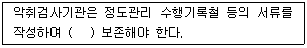
- 1년간
- 3년간
- 5년간
- 10년간
(정답률: 62%)
76. 대기환경보전법규상 다음 ( )안에 들어갈 말로 가장 적합한 것은?
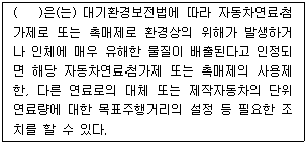
- 대통령
- 환경부장관
- 시ㆍ도지사
- 국립환경과학원장
(정답률: 56%)
77. 환경정책기본법령상 아황산가스(SO2)의 대기환경기준치 및 측정방법 기준으로 옳은 것은? (단, ㉠ 1시간 평균치, ㉡ 측정방법)
- ㉠ 0.10ppm 이하, ㉡ 화학발광법
- ㉠ 0.15ppm 이하, ㉡ 화학발광법
- ㉠ 0.10ppm 이하, ㉡ 자외선형광법
- ㉠ 0.15ppm 이하, ㉡ 자외선형광법
(정답률: 61%)
78. 대기환경보전법규상 대기오염방지시설과 가장 거리가 먼 것은? (단, 기타 환경부장관이 인정하는 시설 등은 제외)
- 미생물을 이용한 처리시설
- 응축에 의한 시설
- 흡광광도에 의한 시설
- 흡착에 의한 시설
(정답률: 70%)
79. 대기환경보전법규상 운행차 배출허용기준 중 일반기준으로 옳지 않은 것은?
- 휘발유와 가스를 같이 사용하는 자동차의 배출가스 측정 및 배출허용기준은 가스의 기준을 적용한다.
- 알코올만 사용하는 자동차는 탄화수소의 기준을 적용한다.
- 휘발유사용 자동차는 휘발유ㆍ알코올 및 가스(천연가스를 포함한다)를 섞어서 사용하는 자동차를 포함한다.
- 건설기계 중 덤프트럭, 콘크리트믹서트럭, 콘크리트펌프트럭에 대한 배출허용기준은 화물자동차기준을 적용한다.
(정답률: 62%)
80. 대기환경보전법령상 배출허용기준 초과와 관련하여 개선명령을 받지 아니한 사업자가 개선계획서를 제출하고 개선하는 경우 초과부과금 산정 시 산정(기준)항목에 해당하지 않는 것은?
- 배출허용기준초과 오염물질배출량
- 지역별 부과계수
- 시간별 산정계수
- 오염물질 1킬로그램당 부과금액
(정답률: 60%)
대기 중 오존은 1차 대기오염물질인 질소산화물과 탄화수소 등이 광화학적 반응을 일으켜 생성되는 2차 대기오염물질이다. 또한, 온실가스로 작용하는 이산화탄소와는 달리 대기 중 오존은 온실가스가 아니며, 오히려 대기 중 오존의 농도가 높아지면 대기 중 이산화탄소의 농도가 낮아지는 경향이 있다.
따라서, 옳지 않은 설명은 "2차 대기오염물질에 해당하고, 온실가스로 작용한다."이다.
대기 중 오존의 배경농도는 0.01∼0.02ppb 정도로 알려져 있는데, 이는 대기 중 오존이 자연적으로 생성되는 양과 인간의 활동으로 인해 생성되는 양이 균형을 이루는 수준이기 때문이다. 그러나 일부 지역에서는 대기 중 오존의 농도가 이 수준을 초과하여 인체 건강에 부정적인 영향을 미칠 수 있다. 대기 중 오존은 산화력이 강하여 인체의 눈을 자극하고 폐수종 등을 유발할 수 있으며, 인체에 미치는 영향으로는 유전인자에 변화를 일으키며, 염색체 이상이나 적혈구 노화를 초래할 수 있다.